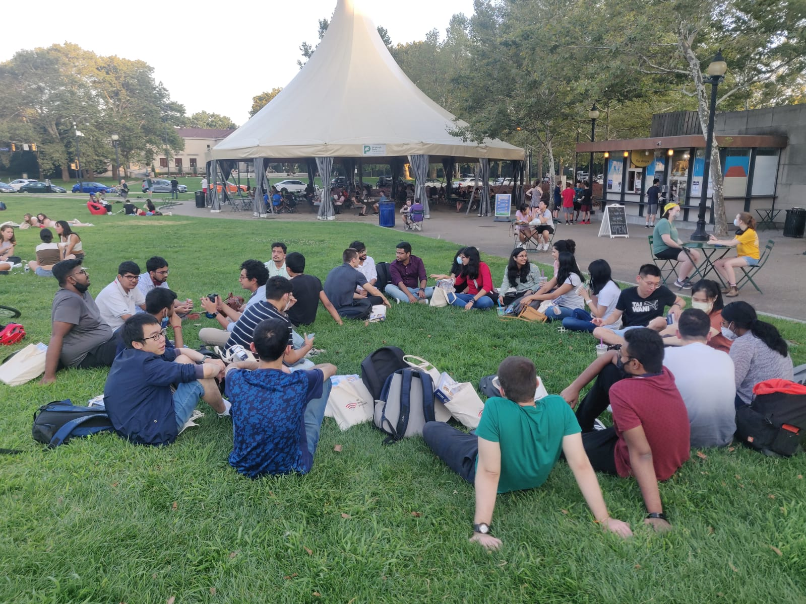
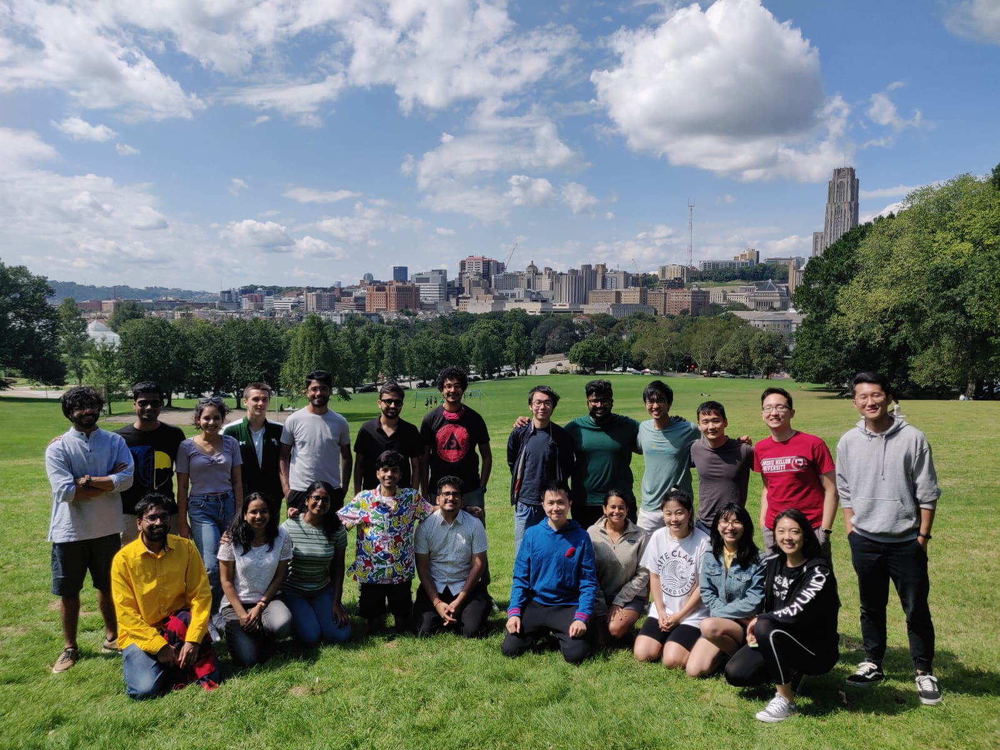
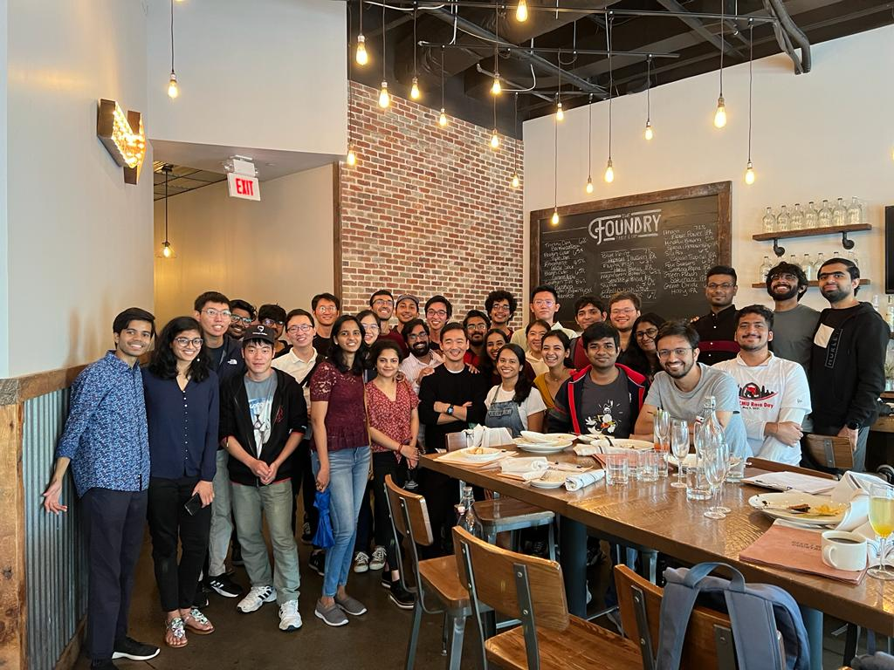

08/23/2021: An impromptu MIIS gathering at Schenley Plaza right after orientation.
 08/23/2021: Meeting everyone for the first time and discovering each other’s interests during a fun game of charades.
 09/06/2021: First MIIS picnic at Schenley Park. Everyone brought a delicious snack (most of them baked cookies!) and we all played some fun board games.
 10/09/2021: The day when we all met at the bar-cum-restaurant in Riverfront.